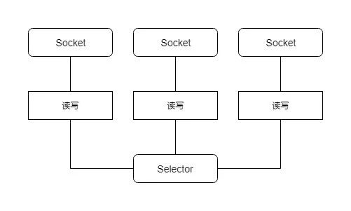

Java NIO 是 IO复用模型在Java平台的实现 , 针对Java BIO在高并发情况下的缺点 1.4之后提供了NIO的实现. 还是以EchoServer为例子.
首选 , 需要创建一个 选择器Selector和一个ServerSocketChannel来侦听端口, 接受连接. 并使用register方法注册accept事件.
// 创建选择器
selector = Selector.open();
// 创建 Channel
serverSocketChannel = ServerSocketChannel.open();
serverSocketChannel.configureBlocking(false);
serverSocketChannel.bind(new InetSocketAddress("127.0.0.1", port));
// ServerSocketChannel 注册accept 事件
serverSocketChannel.register(selector, SelectionKey.OP_ACCEPT);
其次 , 调用selector的select 等待事件就绪 , 并进行对应的处理 . 如果是accept事件则在接收的连接上注册读事件.这边使用了一个讨巧的方式, 每个连接attach了一个字符串, 用于缓存用户输入的一行数据.
while (true) {
try {
selector.select();
Set<SelectionKey> selectedKeys = selector.selectedKeys();
Iterator<SelectionKey> iterator = selectedKeys.iterator();
while (iterator.hasNext()) {
//
SelectionKey key = iterator.next();
if (key.isAcceptable()) {
// 连接就绪事件
// 接收连接产生的socketChannel
SocketChannel socketChannel = serverSocketChannel.accept();
socketChannel.configureBlocking(false);
socketChannel.register(selector, SelectionKey.OP_READ,new StringBuffer());
}
if (key.isReadable()) {
// 数据就绪事件 - accept时候注册在SocketChannel上面的
socketProcess(key);
}
iterator.remove();
}
} catch (Exception ex) {
ex.printStackTrace();
}
}
注册好已接受的连接后 ,它便关心数据就绪事件. select 的时候 ,如果事件就绪则进行处理 . 以下是完整的EchoServer代码 , 接收到用户输入则进行回显.
public class NIOEchoServer {
private static final byte CR = (byte) '\r';
private static final byte LF = (byte) '\n';
private ServerSocketChannel serverSocketChannel;
private Selector selector;
public NIOEchoServer(int port) {
try {
selector = Selector.open();
serverSocketChannel = ServerSocketChannel.open();
serverSocketChannel.configureBlocking(false);
serverSocketChannel.bind(new InetSocketAddress("127.0.0.1", port));
serverSocketChannel.register(selector, SelectionKey.OP_ACCEPT);
} catch (Exception ex) {
ex.printStackTrace();
}
}
public void run() {
while (true) {
try {
selector.select();
Set<SelectionKey> selectedKeys = selector.selectedKeys();
Iterator<SelectionKey> iterator = selectedKeys.iterator();
while (iterator.hasNext()) {
SelectionKey key = iterator.next();
if (key.isAcceptable()) {
SocketChannel socketChannel = serverSocketChannel.accept();
socketChannel.configureBlocking(false);
socketChannel.register(selector, SelectionKey.OP_READ, new StringBuffer());
}
if (key.isReadable()) {
socketProcess(key);
}
iterator.remove();
}
} catch (Exception ex) {
ex.printStackTrace();
}
}
}
private void socketProcess(SelectionKey selectionKey) {
try {
SocketChannel socketChannel = (SocketChannel) selectionKey.channel();
StringBuffer readBuffer = (StringBuffer) selectionKey.attachment();
ByteBuffer byteBuffer = ByteBuffer.allocate(1024);
while (socketChannel.read(byteBuffer) > 0) {
byteBuffer.flip();
while (byteBuffer.hasRemaining()) {
byte readByte = byteBuffer.get();
readBuffer.append((char) readByte);
if (CR == readByte || LF == readByte) {
socketChannel.write(ByteBuffer.wrap(readBuffer.toString().getBytes()));
readBuffer.delete(0, readBuffer.length());
}
}
}
} catch (Exception ex) {
ex.printStackTrace();
}
}
public static void main(String[] args) {
NIOEchoServer nioEchoServer = new NIOEchoServer(12345);
nioEchoServer.run();
}
}
从示例中可以清楚看到 , 接受连接和业务处理并不需要创建多个线程. 使用一个selector管理多个连接.

对比BIO,虽然它的ByteBuffer操作上增加了很大的复杂度 , 但是它使用了较少的线程便可以处理较多的连接, 因此减少了内存管理和线程上下文切换所带来的开销.
然而 , 示例代码的模型也有着比较明显的缺点 , 纯粹使用单线程处理, 无法使用多核机器的优势. 通常使用NIO的时候使用Reactor模式来实现服务器的模型,把IO事件的处理和业务线程隔离开.